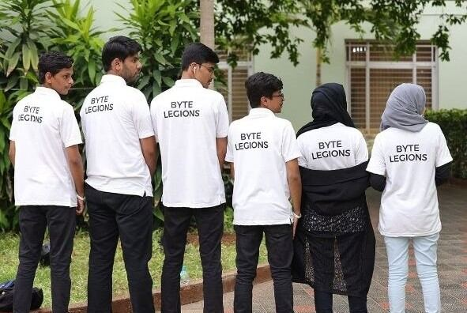
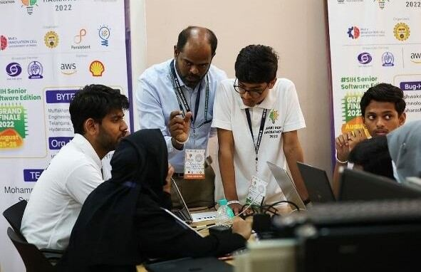
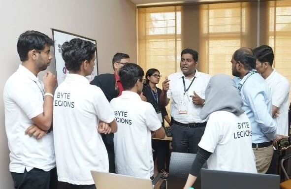
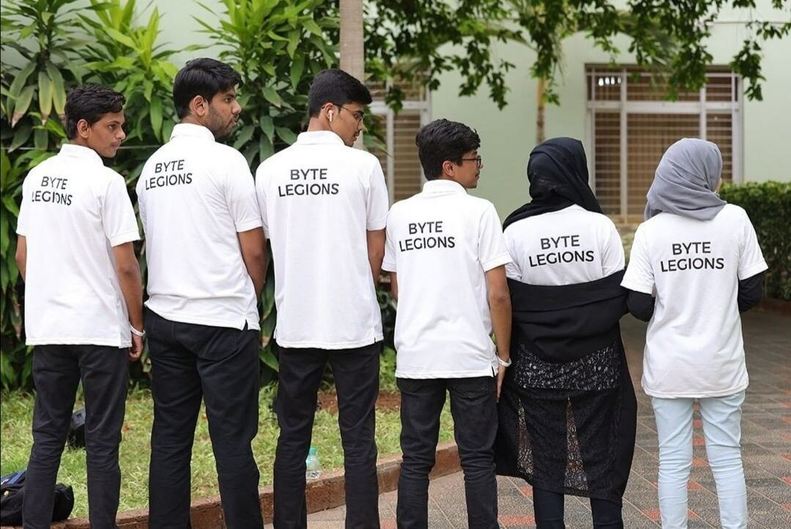

09 / SOFTWARE
Iris Recognition App
Biometric identification from the iris, built in a weekend at Smart India Hackathon 2022.
- Role
- Team member, Byte Legions
- Context
- Smart India Hackathon 2022, Senior Software Edition
- Tools
- Digital camera with visible and near-infrared capture, grayscale preprocessing, template matching
- Scope
- Iris capture, feature extraction, binary encoding, database matching, attendance marking
- Output
- A working recognition pipeline demonstrated to the hackathon judging panel
- Skills
- Biometric imaging
- NIR imaging
- Image preprocessing
- Pattern matching
- Team collaboration
The iris is a ring-shaped region whose pattern is stable over a lifetime and unique to each person, which makes it a strong biometric. The camera uses both visible and near-infrared light to capture a high-contrast image, then locates the centre of the pupil, the pupil edge, the iris edge, and the eyelids and eyelashes.
The image is converted to grayscale and the unique pattern, 1,536 distinct points, is analysed and translated into a binary code. Matcher engines search that code against already-enrolled templates. Once the individual is identified, attendance is written to the attached sheet with name, time and date.



